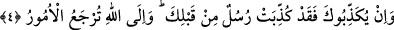

olmadığını ifâde etmektir. Burada mugâyeretle nitelenen şeyin varlığını ortadan
kaldırmaya temas edilmemektedir.
Çünkü bunun mânâsı doğrudan böyle birinin mevcûd olmadığına temas etmeden –ki
esâsen murâd edilen budur- Allah Teâlâ’ya mugâyir bir yaratıcının rızık verme
durumunun mevcûd olmadığını ifâde etmektir. Böyle bir tarif ve anlatımın mânâsı şudur:
Kişi Allah’tan başka rızık veren olmadığını bilirse bir şey taleb etme hususunda kalbini
kimseye bağlamaz. Kendisi gibi âciz bir yaratıktan maîşet ve geçim için kendisine infak
ve harcama yapması konusunda zillet ve minnete mârûz kalmaz. Tabiî ki rızkını âciz bir
yaratıktan görmediği gibi kendinden de görmez. Sonuçta kendi tedbir ve çarelerinin
karanlıklarından bu eşkâl ve emsalde bir şeyi vehim ve hayal etmekten kurtulur.
Allah’ın takdirini müşâhede ederek rahat ve huzur bulur.
Şeyhim ve dayanağım (Osman Fazlî İlâhî) (k.s.) bazı tâlîkâtında der ki: Ey nefsiyle
başı dertli olan kişi! Kim olursan ol. Sen nefsini bize at, onun tedbirini ve senin nefisle
ilgili aldığın tedbirleri bırakıp bizim onun hakkında aldığımız tedbirlere hiç münâzaa
etmeden bizim tedbirlerimizle yetinirsen elbette rahat ve huzurlu olursun. Allah bizi ve
sizi fazlu keremi ile bu minval üzere dâim eylesin. (Amin)
“O’ndan başka” ilah, yaratıcı, rızık veren “tanrı yoktur.” Allah Teâlâ’nın tek ilah
oluşu, yaratıcı ve rızık verici olduğu ortaya çıktığı halde “Nasıl oluyor da” tevhidden
şirke ve Allah’a ibadetten putlara ibadete “çevriliyorsunuz!”
4. Eğer seni yalanlıyorlarsa (üzülme); senden önceki peygamberler de
yalanlanmıştır. Bütün işler yalnızca Allah’a döndürülecektir.
Ey Muhammed! Kendilerine tebliğ ettiğin konularda müşrikler “Eğer seni
yalanlıyorlarsa” yalanlamaya devam ediyorlarsa üzülme, sabret; çünkü “senden
önceki” bir çok “peygamberler de yalanlanmıştır.” Onlar sabrettiler ve başardılar.
“Bütün işler”in sonu başkasına değil “yalnızca Allah’a döndürülecektir.” Buna göre
Allah her sabredeni sabrına karşı; her yalanlayanı da yalanlamasına karşı
cezalandıracak, karşılığını verecektir.
et-Te’vîlâtü’n-Necmiyye’de der ki; Allah Teâlâ burada Rasûlullah (s.a.)’i ve onun
ümmetinin evliyâsını teselliye ve eziyete karşı sabrı kolaylaştırmaya işâret etmektedir.
İşte Peygamberimiz (s.a.) diğer peygamberlerin de aynen onun karşılaştığı sıkıntı ve
musibetlerle karşılaştığını ve onlar bu musibetlere sabrettikleri için Allah’ın onlara kâfî
geldiğini bilince artık onların yoluna gitmekle ve onlara uymakla Allah ona da
yetecektir. Ayrıca gönül ehli olan Allah dostları şunu bilmeliler ki onların bu tarikata
yabancı ve muhalif olanlarla olan durumları peygamberlerin kendi ümmetlerinden
beyinsiz, sefih ve ahmaklarla olan durumları gibidir. Ve yine peygamberleri